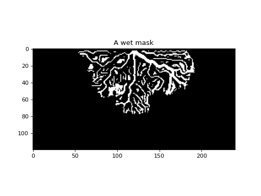

deltametrics.mask.WetMask¶
-
class
deltametrics.mask.WetMask(arr, angle_threshold=75, is_mask=False, **kwargs)¶ Compute the wet mask.
A wet mask object, identifies all wet pixels on the delta topset. Starts with the land mask and then uses the topo_threshold defined for the shoreline computation to add the wet pixels on the topset back to the mask.
If a land mask has already been computed, then it can be used to define the wet mask. Otherwise the wet mask can be computed from scratch.
Examples
- Initialize the wet mask
>>> arr = rcm8cube['eta'][-1, :, :] >>> wmsk = dm.mask.WetMask(arr)
- And visualize the mask:
>>> wmsk.show()
-
__init__(arr, angle_threshold=75, is_mask=False, **kwargs)¶ Initialize the WetMask.
Intializing the wet mask requires either a 2-D array of data, or it can be computed if a
LandMaskhas been previously computed.- Parameters
arr (ndarray) – The data array to make the mask from.
angle_threshold (int, optional) – Threshold opening angle used in the OAM. Default is 75 degrees.
is_mask (bool, optional) – Whether the data in
arris already a binary mask. Default is False. This should be set to True, if you have already binarized the data yourself, using custom routines, and want to just store the data in the WetMask object.
- Other Parameters
landmask (
LandMask, optional) – ALandMaskobject with a defined binary shoreline mask. If given, theLandMaskobject will be checked for the shore_image and angle_threshold attributes.kwargs (optional) – Keyword arguments for
compute_shoremask.
Methods
Seaangles_mod(numviews, thresholdimg)Extract the opening angle map from an image.
__init__(arr[, angle_threshold, is_mask])Initialize the WetMask.
compute_shoremask([angle_threshold])Compute the shoreline mask.
compute_wetmask(**kwargs)Compute the WetMask.
show([t])Show the mask.
Attributes
Values of the mask object.
Binary mask values.
-
Seaangles_mod(numviews, thresholdimg)¶ Extract the opening angle map from an image.
Adapted from the Matlab implementation in 2. Takes an image and extracts its opening angle map.
- Parameters
numviews (int) – Defines the number of times to ‘look’ for the opening angle map.
thresholdimg (ndarray) – Binary image that has been thresholded to split deep water/land.
- Returns
shoreangles (ndarray) – Flattened values corresponding to the shoreangle detected for each ‘look’ of the opening angle method
seaangles (ndarray) – Flattened values corresponding to the ‘sea’ angle detected for each ‘look’ of the opening angle method. The ‘sea’ region is the convex hull which envelops the shoreline as well as the delta interior.
-
compute_shoremask(angle_threshold=75, **kwargs)¶ Compute the shoreline mask.
Applies the opening angle method 1 to compute the shoreline mask. Particular method has been translated from 2.
- 1
Shaw, John B., et al. “An image‐based method for shoreline mapping on complex coasts.” Geophysical Research Letters 35.12 (2008).
- 2(1,2)
Liang, Man, Corey Van Dyk, and Paola Passalacqua. “Quantifying the patterns and dynamics of river deltas under conditions of steady forcing and relative sea level rise.” Journal of Geophysical Research: Earth Surface 121.2 (2016): 465-496.
- Parameters
angle_threshold (int, optional) – Threshold opening angle used in the OAM. Default is 75 degrees.
- Other Parameters
topo_threshold (float, optional) – Threshold depth to use for the OAM. Default is -0.5.
numviews (int, optional) – Defines the number of times to ‘look’ for the OAM. Default is 3.
-
compute_wetmask(**kwargs)¶ Compute the WetMask.
Either recomputes the landmask, or uses precomputed information from the landmask to create the wetmask.
-
data¶ Values of the mask object.
In setter, we should sanitize the inputs (enforce range 0-1) and convert everything to uints for speed and size.
- Type
ndarray
-
mask¶ Binary mask values.
Read-only mask attribute.
- Type
ndarray
-
show(t=-1, **kwargs)¶ Show the mask.
- Parameters
t (int, optional) – Value of time slice or integer from first dimension in 3D (t-x-y) convention to display the mask from. Default is -1 so the ‘final’ mask in time is displayed if this argument is not supplied.
**kwargs to matplotlib.imshow. (Passes) –
{kind=link}
{kind=link}